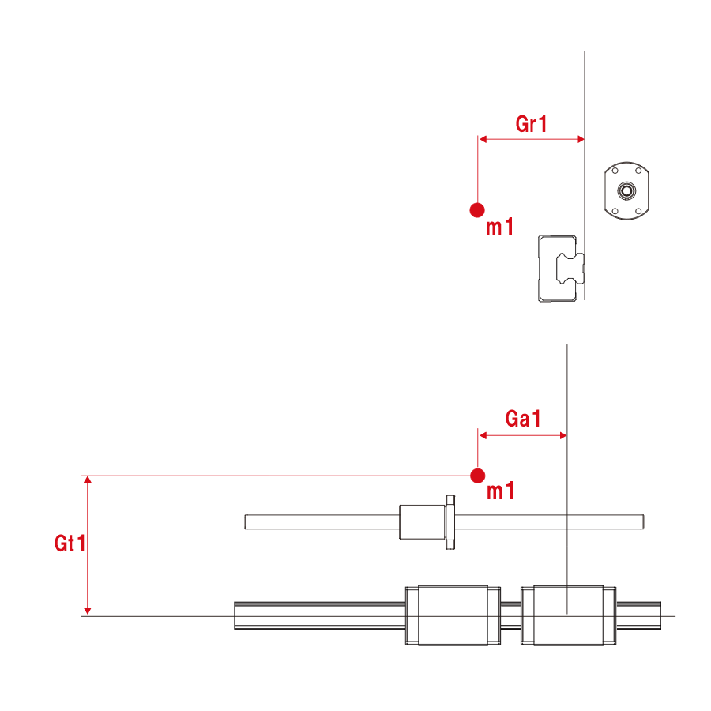
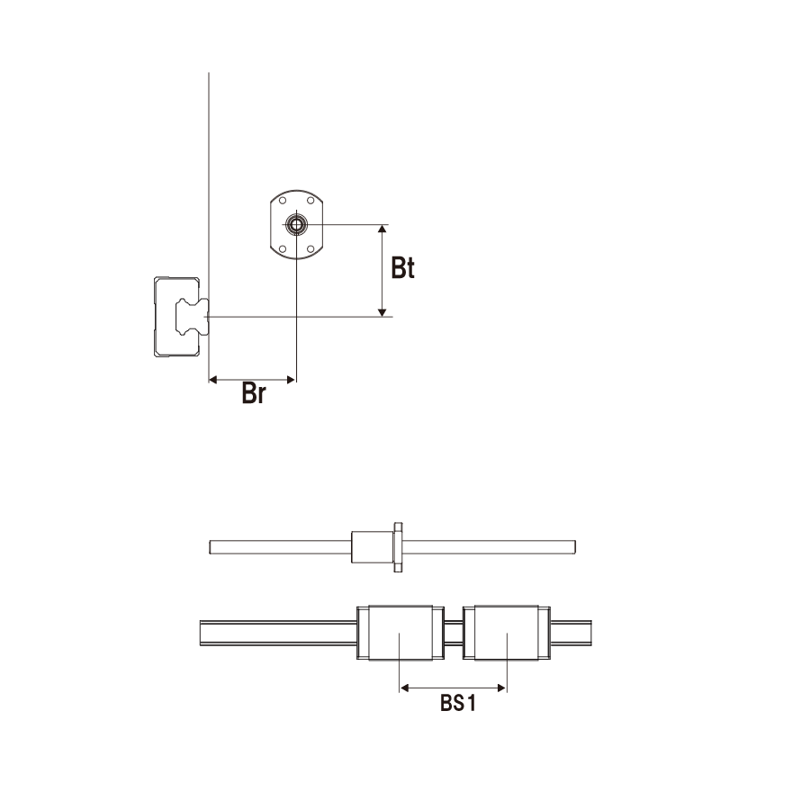
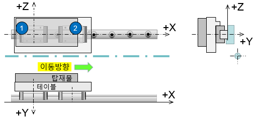
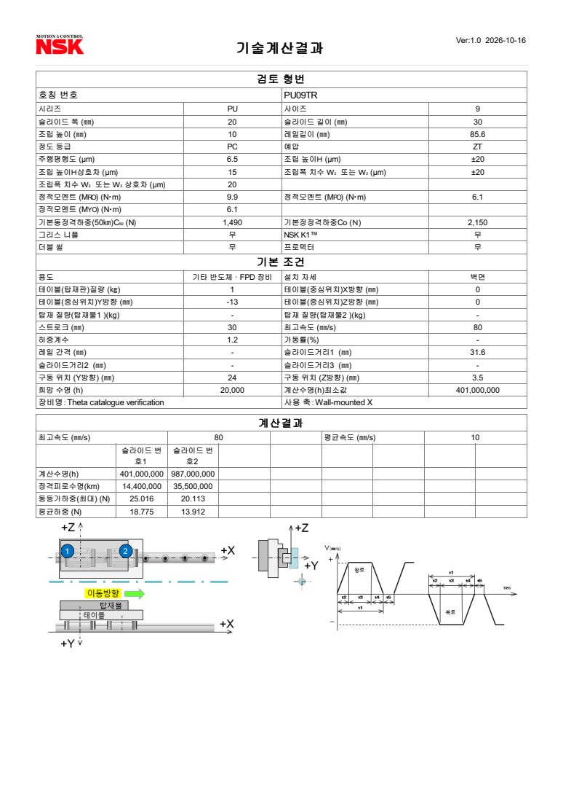

6.44% 최대하중 차이의 원인은 자체 계산의 벽면 좌표축 적용 오류였다. Fr·Fs에 넣을 두 모멘트 항을 바로잡으면 1kg 중앙 시험 최대 Fe=22.564684N → 툴22.565N, 평균 Fm=16.330738N → 툴16.331N이다. 경험계수 없이 재현된다.
이전 보고의 조건도 정정한다. 원본 Theta Ga=0은 No.1 블록에 맞춘 위치이며 중앙이 아니다. NSK X=0이 대응한다. 앞서 X=15.8을 Theta로 취급한 설명을 철회하고, 중앙 질량의 별도 대조 사례로 남겼다. 원본 질량15kg의 툴 결과는 여전히 양 블록 NG이며 수치 미출력이다.
NSK E3162 공식 카탈로그 A35–36(표2.2), A39–40(표2.3/2.4), A41–43의 순서로 검토했다. A36의 Fr은 레일에 수직인 제품 고유 방향이고 Fs는 레일 폭 방향이다. 벽면 설치에서도 Fr을 지구 수직방향으로 취급하면 안 된다. 툴의 전역 좌표로는 Fr이 Y, Fs가 Z 방향으로 돌아간다. 한 레일 두 블록은 표2.3에 따라 Fr·Fs·Mr을 사용하고, 피칭/요잉 모멘트는 두 블록의 힘 차이로 분담한다.
PU09TR은 α=45°, εr=215/m, εp=εy=222/m. 모멘트 Nmm는 /1000하여 Nm로 바꾼다. ZT는 미틈새 조건이며 중예압 수명 보정은 적용하지 않았다. NH/NS의50° 계수와 THK kP·5.7mm는 사용하지 않았다.
u = [|Fr|, |Fs| tan45°, εr |Mr| /1000, εp |Mp| /1000, εy |My| /1000]
Fe = (Σu + max(u)) /2
Fm = {Σ(Fe_i³ × 거리_i) /Σ거리_i}^(1/3)
L50 = 50 {C50 /(fw Fm)}³ km
NSK BS위치 입력 화면의 노란색 ‘기준 위치’ 도면을 확인했다. X는 No.1 블록 중심에서 레일 길이 방향, Y는 레일 취부면 기준 법선 방향(구동부 쪽 +), Z는 레일 폭 중심선 기준 위쪽 +이다. Y=0은 블록 윗면이 아니며, 조립높이나 추정 볼 접촉 중심을 별도로 더하지 않는다. THK 입력 도면에서도 Gr·Br은 취부면의 양쪽 거리이고 Gt·Bt는 레일 중심선 기준이다. 외부 형상은 아래 좌표로 맞춘다.
| 항목 | Theta 원본 | NSK 대응 입력 |
|---|---|---|
| 질량의 축방향 위치 | Ga=0mm | X=0mm (No.1 중심) |
| 질량의 취부면 법선 위치 | Gr=13mm | Y=−13mm |
| 질량 높이 | Gt=0mm | Z=0mm |
| 추력선의 취부면 법선 위치 | Br=24mm | YB=+24mm |
| 추력선 높이 | Bt=3.5mm | ZB=+3.5mm |
| 블록 스팬 | BS=31.6mm | Bsp=31.6mm |
두 모델의 블록 조립높이·길이·내부 접촉 구조는 다르다. 여기서 일치시키는 대상은 취부면 기준의 질량·추력선·스팬 배치이다. PU09TR이 실제 HSR10R 취부부에 호환된다는 뜻은 아니다. 도면 픽셀로 치수나 하중 중심을 추정하지 않았다.


NSK 공식 결과의 동일한 좌표축 배치:

W=mg, F=ma, x=무게중심 X, l=BS, ΔY=YB−YG=Br+Gr, ΔZ=ZB−ZG=Bt−Gt. 아래 부호는 왕로 한 방향 가속을 기준으로 정의하며, 결과 화면이 구간별 힘을 공개하지 않으므로 구간 부호 자체를 툴 값으로 검증했다고 주장하지 않는다.
Fr1 = +F ΔY/l Fr2 = −F ΔY/l Fs1 = W(1−x/l) + F ΔZ/l Fs2 = W x/l − F ΔZ/l Mr1 = Mr2 = W Gr/2 [Nmm] 감속: F→−F / 정속: F=0 Fr1+Fr2=0, Fs1+Fs2=W, Mr1+Mr2=W Gr
기존에는 Fr에 FΔZ/l를 넣고 Fs에 FΔY/l를 더했다. 제품 고유축을 전역축으로 회전시키는 단계가 빠진 오류다. 이제 X=0에서 중력은 No.1에 배분되고 X=l/2이면 양 블록에 절반씩 배분된다.
기존 1kg 중앙 시험의 왕로 가속 구간을 동일 입력으로 비교한다.
| 변환 하중 성분 | 기존 오류식 N | 수정식 N |
|---|---|---|
| |Fr| | 1.107595 | 11.708861 |
| |Fs| | 16.612186 | 6.01092 |
| Fre | 13.704793 | 13.704793 |
| 가장 큰 성분 | Fs=16.612186 | Fre=13.704793 |
| 최대 Fe | 24.018380 | 22.564684 (툴22.565) |
이 사례는 Σu가 같아도 가장 큰 성분이 바뀌어 Fe가 1.453696N 달라진다. (24.018380/22.565−1)×100≈6.44%이다. 공식의 분기 선택이 입력 축 오류의 영향을 받은 것이며, 툴 내부의 미공개 스팬 계수를 가정할 필요가 없다.
16일 새로 재계산한 Theta X=0·1kg 결과와, 이전 중앙 X=15.8·1kg PDF를 대조했다. 각 사례의 최대값2개와 평균값2개, 총8개 모두 표시 정밀도 ±0.0005N 이내이다.
| 조건 | 공식 최대 N | 툴 최대 N | 차이 N | 공식 평균 N | 툴 평균 N | 차이 N |
|---|---|---|---|---|---|---|
| Theta 형상 · 1kg 진단 · No.1 | 25.016346 | 25.016 | 0.000346 | 18.775382 | 18.775 | 0.000382 |
| Theta 형상 · 1kg 진단 · No.2 | 20.113021 | 20.113 | 0.000021 | 13.912234 | 13.912 | 0.000234 |
| 중앙 질량 · 이전 1kg 대조 · No.1 | 22.564684 | 22.565 | -0.000316 | 16.330738 | 16.331 | -0.000262 |
| 중앙 질량 · 이전 1kg 대조 · No.2 | 22.564684 | 22.565 | -0.000316 | 16.330738 | 16.331 | -0.000262 |
운전조건: ST30mm, V80mm/s, a10m/s², 가감속 각각0.008s, 정속0.367s. 거리 가중치는0.32/29.36/0.32mm이며 왕복에서는 구간 역할을 바꾸어 반복한다. 정지 각각2.617s로 왕복600회/h, fw1.2. 희망수명20,000h는 NSK 입력 기본 요구값이며 원본 Theta 요구수명으로 확인된 값은 아니다.
| 블록 | 구간 | Fr N | Fs N | Mr Nmm | Fe N |
|---|---|---|---|---|---|
| No.1 | 왕로 가속 | 11.708861 | 10.914245 | 63.743225 | 25.016346 |
| No.1 | 왕로 정속 | 0 | 9.80665 | 63.743225 | 18.608118 |
| No.1 | 왕로 감속 | -11.708861 | 8.699055 | 63.743225 | 23.908751 |
| No.2 | 왕로 가속 | -11.708861 | -1.107595 | 63.743225 | 20.113021 |
| No.2 | 왕로 정속 | -0 | 0 | 63.743225 | 13.704793 |
| No.2 | 왕로 감속 | 11.708861 | 1.107595 | 63.743225 | 20.113021 |
복로는 가속·감속의 힘 부호가 반대다. 이 중간값은 공개식 계산값이며 NSK가 구간별로 직접 출력한 값이 아니다.
동일한 외부 배치 (0,−13,0), 추력(24,3.5), BS31.6을 원본15kg으로 복원해 공식 툴에서 재계산했다. 두 블록 모두 ‘등가하중 허용치 초과’ NG이며 최대하중·평균하중·수명을 표시하지 않는다. 독립 카탈로그 계산값은 아래처럼 따로 남긴다.
| 15kg 독립 공식 계산 | No.1 | No.2 |
|---|---|---|
| 최대 Fe N | 375.245193 | 301.695318 |
| 평균 Fm N | 281.630729 | 208.683504 |
| 공식 툴 최대/평균 | NG / 미출력 | NG / 미출력 |
검증 범위는 두 좌표 사례의 최대/평균하중이다. 모든 설치형태·모델의 검증으로 확대하지 않는다. NG 경계는 아래 v3 추가 시험에서 좁혔으며, 공개된 범용 판정식과 복합 힘·모멘트의 정적 안전율은 미확정이다. C0/Fe를 정적 안전율로 대신 표시하지 않는다. 수명 출력의 작은 잔차는 이번 축 오류와 별개로 남기며, 내부 정밀도나 반올림 때문이라고 확정하지 않는다.
카탈로그를 먼저 검토했다. A33–34에서 C50은 50km 피로수명의 일정하중 기준이며 최대 작업하중이 아니다. C0는 전동체·접촉부의 영구변형 기준 정격으로, 파괴하중이나 무조건 허용 가능한 사용하중으로 해석하지 않는다. PU는 하중 방향별 정격이 같지만, 힘과 모멘트의 정적 검토는 동등가하중 Fe의 수명 계산과 구분한다.
A44 표2.6의 볼 가이드 정적 안전율 지침은 통상1–2, 진동·충격1.5–3이다. 힘만의 PU 정적 등가하중은 P0=|Fr|+|Fs|, fs=C0/P0이며, 단일 롤 모멘트만은 fs=MRO/|Mr|이다. A44가 제시하는 단독 검토식을 아래에 적용했다. 힘+롤 동시 부하의 종합 안전율은 이 값의 최솟값이나 C0/Fe로 대체하지 않는다. 검토한 페이지에는 본 조건의 복합 판정식을 확인하지 못했다. 다방향 모멘트 동시 부하는 NSK 문의 안내 대상이다.
| 15kg 정적 단독 검토 | 힘만 P0 최대 N | 힘만 fs | 롤 Nm | 롤만 fs | 힘+롤 종합 fs |
|---|---|---|---|---|---|
| No.1 | 339.346585 | 6.335705 | 0.956148 | 10.354042 | 미확정 |
| No.2 | 192.246835 | 11.183539 | 0.956148 | 10.354042 | 미확정 |
단독 검토값은 모두 지침 상단3보다 크다. 따라서 정적 단독 기준의 초과로 툴 NG를 설명할 수 없다. 이것을 실제 동시 부하의 최종 정적 적합 판정으로 확대하지 않는다.
A45는 높은 하중 구간의 수명을 평균 수명과 별도로 검토하고, 계산수명3,000km 미만이면 높은 접촉압·윤활·오염의 영향을 주의하도록 안내한다. 이 페이지는 일률적인 자동 NG 한계식을 선언하지 않는다.
| 15kg · 독립 카탈로그 계산 | No.1 | No.2 |
|---|---|---|
| 평균 Fm 기반 수명 km | 4,284.942071 | 10,532.239086 |
| 최대 Fe로 계속 운전한다고 가정한 수명 km | 1,811.505503 | 3,485.614541 |
| 최대하중 수명의 3,000km 미만 여부 | 해당 | 비해당 |
12kg에서는 최대하중 기준 수명도 No.1=3,538.097km / No.2=6,807.841km로 양쪽 모두3,000km 이상인데도 툴은 NG였다. 반대로11.91kg·fw1.5는 No.1 최대하중 수명이 1,852.883489km로3,000km 미만인데도 하중·평균수명이 정상 출력됐다. 따라서 ‘최대하중 수명3,000km’는 관찰한 툴 NG의 직접 규칙이 아니다. 정상 출력이 카탈로그 주의사항의 면제를 뜻하지도 않는다.
No.1 최대 Fe=297.944684N 조건은 정상 출력, 298.194847N 조건은 NG였다. 경계는 약297.945–298.195N 사이로 좁혀졌다. C50/5=298N과 일치하는 구간이다. fw1.2→1.5 변경에서도 경계 아래의 최대/평균하중은 동일하게 출력됐다.
| 질량 kg | fw | No.1 최대 공식 N | No.2 최대 공식 N | 툴 No.1 / No.2 최대 N | 증빙 |
|---|---|---|---|---|---|
| 11.9 | 1.2 | 297.69452 | 239.344953 | 297.695 / 239.345 | 공식 PDF |
| 11.91 | 1.2 | 297.944684 | 239.546083 | 297.945 / 239.546 | 공식 PDF |
| 11.92 | 1.2 | 298.194847 | 239.747213 | NG / NG | 공식 PDF |
| 12 | 1.2 | 300.196155 | 241.356255 | NG / NG | 공식 PDF |
| 11.91 | 1.5 | 297.944684 | 239.546083 | 297.945 / 239.546 | 공식 PDF |
| 15 | 1.2 | 375.245193 | 301.695318 | NG / NG | 공식 PDF |
분류: 툴 관찰에 근거한 판정 경계이며, 공개 카탈로그 공식으로 확정한 C50/5 규칙은 아니다. 정확히298N인 등호 조건, 다른 형번·스팬·설치 자세의 보편성은 검증하지 않았다. 따라서 C50/5를 범용 선정 모듈의 공식 허용하중으로 하드코딩하지 않았다. 공식 함수는 staticScreen/peakLifeScreen이고, 툴 관찰은 별도 JSON에 보관한다.
11.92kg에서 No.2 최대 Fe는 약239.748N으로 경계보다 충분히 작지만 결과는 둘 다 NG다. 적어도 한 블록이 한계를 넘으면 두 블록의 수치 출력을 함께 중단하는 동작이 확인됐다. 따라서 이전 ‘양 블록 NG’를 두 개의 독립 불합격 판정으로 읽으면 안 된다.
Theta15kg 해석: No.1 최대375.245193N과 No.2 최대301.695318N은 관찰된 경계 상단298.195N보다 모두 크다. 툴의 최대 동등가하중 상한에 걸리는 조건이며, 정적 힘·롤 단독 안전율 부족이나 요구수명20,000h 부족으로 설명되는 NG가 아니다. 다만 이 판단의 한계 근거는 툴 관찰이며, 제조사 공개 기준으로 확정하려면 NSK의 별도 확인이 필요하다.
허용하중 검토·툴 관찰 원자료 JSON · 카탈로그 A43–44 그림 · 카탈로그 A45 주의사항 그림
결론: 검토한 NSK 공식 자료에서 PU09TR에 적용할 수 있는 힘+롤의 종합 정적 안전율 산출식을 확인하지 못했다. 따라서 제조사 공식 종합 안전율은 빈값(null)으로 유지한다. 이는 NSK 내부 계산법의 부재를 뜻하지 않는다. 단독 검토의 여유나 툴의 동등가하중 NG만으로 복합 정적 적합을 판정하지 않는다.
E3162 A44는 힘만의 P0=|Fr|+|Fs|, fs=C0/P0와 단일 모멘트 fs=M0정격/|M작용|를 각각 제시한다. A44의 다방향 모멘트 동시 부하에 관한 문의 안내 문구 자체를, 힘+롤의 합성 공식으로 해석하지 않는다. A39–41의 εr와 Fe 합성식은 동등가하중용이다.
| 검토한 공식 자료 | 확인한 범위 | 본 문제에 적용 가능한 정도 |
|---|---|---|
| E3162 A34/A36/A39–44 | 제품 정격, 블록별 하중 배분, 동등가하중, 정적 단독 검토 | 단독 검토만 공식 적용. 복합 정적 판정식 미확인 |
| PU/PE E3327e 표13 | PU09TR C0=2150N, MRO=9.9Nm | 입력 정격 확보. 두 정격만으로 상호작용 곡선 도출 불가 |
| NH/NS E3332c | 50° 계열의 동등가하중 환산 | PU09TR 45°의 정적 합성식으로 전용하지 않음 |
| NSK 고정밀화 기술보고서 §3.2–3.3 | 내부 접촉하중·힘/모멘트 평형·설계 상수 K를 이용한 자세 변화 해석 | PU09TR 내부 설계값과 정적 판정 기준이 없어 수치 전용 불가 |
기술보고서의 접촉 모델은 정적 안전율의 간단한 선정식이 아니다. PU09TR 내부 접촉 위치, 유효 볼 배치·개수, 강성/접촉 상수, 예압·틈새 및 허용 접촉변형 자료를 확보하지 않은 상태에서 정격 C0와 MRO만으로 접촉해석을 완성하지 않았다. 다른 제조사의 식·CAD 축척·THK 5.7mm도 대입하지 않았다.
아래 구간별 힘·롤 모멘트는 E3162 A36에 따른 독립 배분값이다. 모든 구간에서 힘과 롤이 동시에 존재하며, 롤은 블록당0.956148375Nm이다. 정적 검토는 이동거리 평균이 아니라 같은 구간에 동시에 걸리는 최대 부하를 본다.
| 블록 | 구간 | Fr N | Fs N | Mr Nm | 힘만 P0 N |
|---|---|---|---|---|---|
| No.1 | 왕로 가속 | 175.632911 | 163.713674 | 0.956148 | 339.346585 |
| No.1 | 정속 | 0 | 147.09975 | 0.956148 | 147.09975 |
| No.1 | 왕로 감속 | -175.632911 | 130.485826 | 0.956148 | 306.118737 |
| No.2 | 왕로 가속 | -175.632911 | -16.613924 | 0.956148 | 192.246835 |
| No.2 | 정속 | -0 | 0 | 0.956148 | 0 |
| No.2 | 왕로 감속 | 175.632911 | 16.613924 | 0.956148 | 192.246835 |
| 15kg | 힘만 공식 fs | 롤만 공식 fs | NSK 공식 종합 fs | 선형 합산 가정의 참고 지수 I | 종합 적합 판정 |
|---|---|---|---|---|---|
| No.1 | 6.335705 | 10.354042 | 미확정 | 3.930566 공식 근거 없는 가정값 | 판정하지 않음 |
| No.2 | 11.183539 | 10.354042 | 미확정 | 5.376408 공식 근거 없는 가정값 | 판정하지 않음 |
참고 지수 I는 다음 식을 임의 가정했을 때의 비교값이다. NSK 공식식으로 확인되지 않았고, 실제 안전율의 보수적인 하한임도 입증하지 못했다. 이 값이3보다 크다는 이유로 통과를 부여하지 않는다. 공식 종합 안전율과는 별도 필드에 저장한다.
가정에 한정한 참고 계산: u_i = (|Fr_i|+|Fs_i|)/C0 + |Mr_i|/MRO I = 1/max_i(u_i) (동일 구간의 힘과 모멘트를 합산) NSK 공식 종합 안전율 = null 종합 적합 여부 = null
금지한 대체: min(힘만 fs, 롤만 fs)를 종합 fs로 표시하거나 C0/Fe를 정적 fs로 표시하지 않는다. PU09TR의 동등가 롤 계수215/m와 정격 비 C0/MRO=217.171717/m는 정의도 다르며, 후자를 만들 수 있다는 사실만으로 정적 합성 법칙이 입증되지 않는다.
확정에 필요한 추가 근거는 NSK의 PU09TR 적용 복합 정적 등가하중식 또는 하중 상호작용 허용선도, 계수와 기준면의 정의다. 본 조사에서 문의를 전송하지 않았다. 기존 툴의 약298N NG 경계 관찰은 이 종합 안전율을 검증한 자료로 사용하지 않는다.
lm-guide/nsk-pu.js의 벽면 축 변환, 무게중심 X와 양 블록 계산을 수정했다. test-nsk-pu.js는 힘·모멘트 평형, 높이/법선 모멘트 구분, 공식 툴8개 값의 회귀 검증을 수행한다. 기존 THK 후보 계산식은 변경하지 않았다.
이전 v1 보고는 v1_축오류이력 파일로 보관했다. 해당 자료의 중앙=Theta 설명, 원점 미확정 분류, 6.44% 원인 미상 및 유한 블록 분담 가설은 본 v2가 대체한다. THK 내부 하중 중심의5.7mm가 공식 치수로 확인되었다는 뜻은 아니다.
